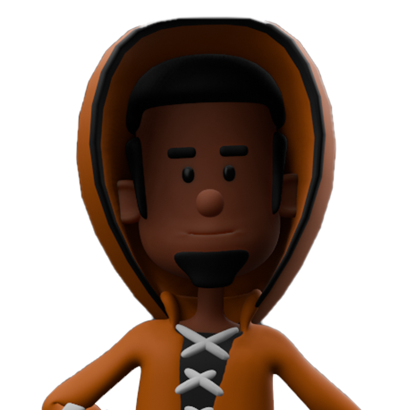
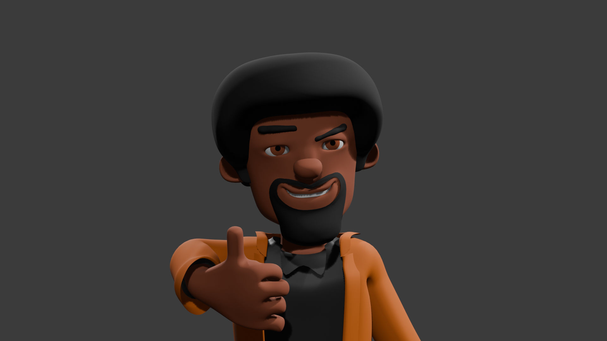

While working on a completely different game, Padlockes Technolgies realized it just wasn't working. The game project was cancelled, and the company itself was shutdown. Luckily, the company still worked on some faces of Lockes.
This is probably the most loved new face of Lockes, and he might make a return in a future game. However, animating him and trying to make other characters in this style ended up being quite a pain. Plus he had 4 fingers, which is just strange.

Now, with this current face of Lockes considered to hopefully be the official version, Padlockes Technologies is rebranding to thePadlockesTech and will try its darnedest to make a franchise with the character and his time traveling thievery adventures. Where will Lockes go in the future? Stay tuned to find out!